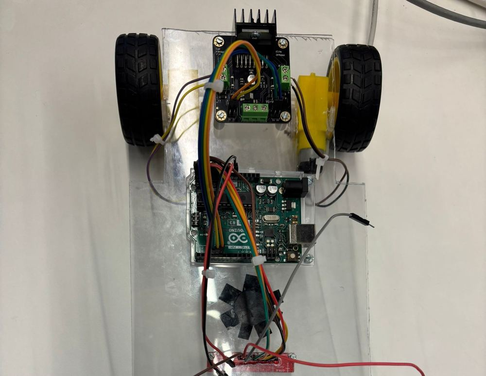

De código a pista de competición.
Cuando decidí presentarme al ASTI Robotic Challenge no tenía ni idea de hasta dónde podíamos llegar. Era un reto nuevo, fuera de mi zona de confort, y eso era exactamente lo que necesitaba.
El desafío era construir un robot siguelíneas funcional y programarlo desde cero. Sin librerías externas. Sin atajos. Solo C++, sensores infrarrojos y un algoritmo de corrección propio que fuimos ajustando iteración a iteración.

Goty
Robot siguelíneas con Arduino, programado íntegramente en C++ con sensores infrarrojos y algoritmo de corrección diseñado desde cero.
C++ArduinoIR sensorsH-Bridge
Muchos fallos antes del primer acierto.
Lo que desde fuera parece un robot pequeño, por dentro es el resultado de semanas de pruebas, ajustes y frustraciones. Cada vez que el robot se salía de la línea aparecía una nueva hipótesis que probar.
Aprendí que en robótica, como en desarrollo de software, el debugging no es el enemigo. Es el proceso. La diferencia entre un robot errático y uno preciso son unas pocas líneas de lógica bien pensada.


Aprendizajes que se quedan.
La teoría sin práctica no sirve de nada.
Puedes saber C++ de memoria, pero hasta que no lo ejecutas sobre hardware real no entiendes los límites del sistema.
Los errores son parte del diseño.
Diseñamos el algoritmo fallando primero. Cada caso borde que rompía el robot nos enseñó algo.
Salir de la zona de confort merece la pena.
Vengo del desarrollo web y las apps. La robótica era territorio desconocido. Ahora es parte de mi historia.
El trabajo en equipo multiplica el resultado.
Este logro no habría sido posible sin las personas que lo vivieron conmigo.
No necesitas ser la más experta para competir. Necesitas curiosidad, constancia y no tenerle miedo al resultado.
Seguir construyendo con propósito.
Este premio es un punto de inflexión, no un punto final. Sigo estudiando DAM, trabajando en proyectos como Signofy o AutoLog y apoyando iniciativas como STEM Girls para que más chicas vean la tecnología como un espacio que también es suyo.
Si estás pensando en presentarte a una competición y crees que no estás lista: ve. El aprendizaje ocurre exactamente ahí, en el momento de incomodidad.